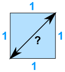
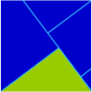

Pythagorean Theorem
Pythagoras
Over 2000 years ago there was an amazing discovery about triangles:
When a triangle has a right angle (90°) ...
... and squares are made on each of the three sides, ...
... then the biggest square has the exact same area as the other two squares put together! (press Go).

It is the "Pythagorean Theorem" and can be written in one short equation:
a2 + b2 = c2

Note:
- c is the longest side of the triangle
- a and b are the other two sides
Definition
The longest side of the triangle is called the "hypotenuse", so the formal definition is:
In a right angled triangle:
the square of the hypotenuse is equal to
the sum of the squares of the other two sides.
Sure ... ?
Let's see if it really works using an example.
Example: A "3, 4, 5" triangle has a right angle in it.
 |
Let's check if the areas are the same: 32 + 42 = 52 Calculating this becomes: 9 + 16 = 25 It works ... like Magic! |

Why Is This Useful?
When we know two side lengths of a right triangle we can find the third side length.
How Do I Use it?
Write it down as an equation:
 |
a2 + b2 = c2 |
Then we use algebra to find any missing value, as in these examples:
Example: Solve this triangle

Read about Squares and Square Roots to discover why √169 = 13
Example: Solve this triangle.

Example: What is the diagonal distance across a square of size 1?


Is it a Right Angle?
It works the other way around, too: when the three sides of a triangle make a2 + b2 = c2, then the triangle is right angled.
Example: Does this triangle have a Right Angle?

Does a2 + b2 = c2 ?
Which shows us that a2 + b2 is equal to c2, so ...
Yes, it does have a Right Angle!
Example: Does an 8, 15, 16 triangle have a Right Angle?
Does 82 + 152 = 162 ?
they are not equal
So, NO, it does not have a Right Angle
Example: Does this triangle have a Right Angle?

Yes, it does!
So this is a right-angled triangle
And You Can Prove The Theorem Yourself !
Get paper pen and scissors, then using the following animation as a guide:
这里原本是一段动画视频，在原站上由第三方网站提供，为了让课件完全离线可用，这里没有放进来。
- Draw a right angled triangle on the paper, leaving plenty of space
- Draw a square along the hypotenuse (the longest side)
- Draw the same sized square on the other side of the hypotenuse
- Draw lines as shown on the animation, like this:

- Cut out the shapes
- Arrange them so that you can prove that the big square has the same area as the two squares on the other sides
Another, Amazingly Simple, Proof
Here is one of the oldest proofs that the square on the long side has the same area as the other squares.
这里原本是一段动画视频，在原站上由第三方网站提供，为了让课件完全离线可用，这里没有放进来。
Watch the animation, and pay attention when the triangles start sliding around.
You may want to watch the animation a few times to understand what is happening.
The purple triangle is the important one.
 |
becomes |  |
We also have a proof by adding up the areas.